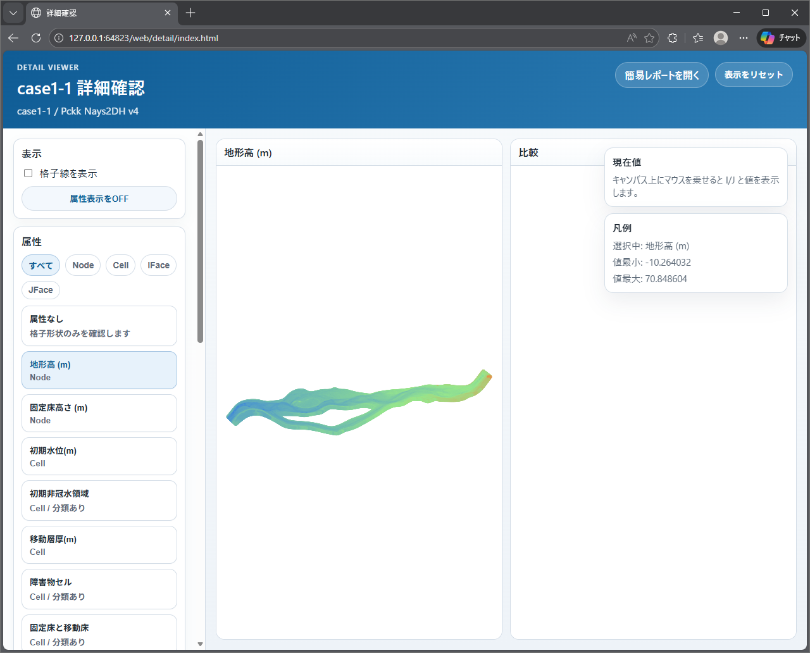
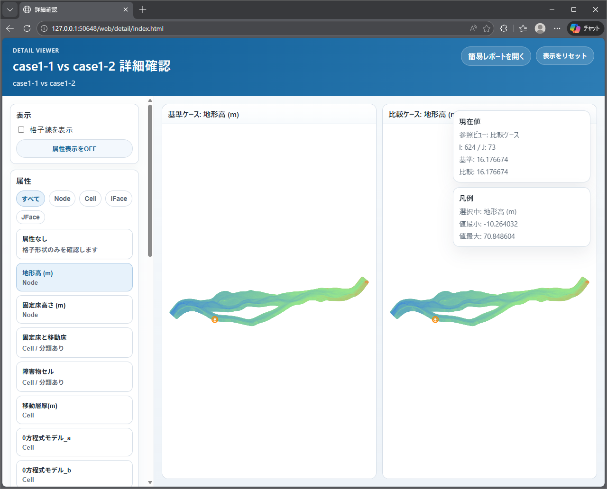
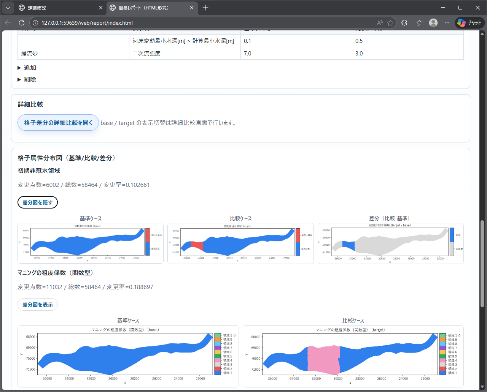

レポートの見方¶
HTML レポート¶
- ブラウザでの閲覧に適したレポートです。
- 確認モードでは入力条件の可視化、比較モードでは差分可視化を中心に表示します。
- 画面操作による確認作業に適しています。
- HTML 出力には
簡易レポートと詳細確認 viewerが含まれます。 - GUI では
簡易レポート（HTML）を開くから report を開き、必要に応じて report 内のボタンから detail へ遷移します。
HTML 利用時の注意¶
- HTML は
reportとdetailをまとめたweb出力として生成されます。 - 詳細確認 viewer は格子形状や格子属性を拡大して確認するための画面です。通常確認は簡易レポート、詳細確認が必要な場合だけ viewer を使う運用を推奨します。
- 格子数や属性数が多いケースでは、詳細確認 viewer の表示や切替が重くなることがあります。
- 比較モードでは、差分図がある項目だけ
差分図を表示ボタンで 3 列目を展開できます。初期表示は基準 / 比較の 2 列です。
開き方¶
- GUI から開く場合は、内部でローカルサーバを起動して表示します。
- 出力フォルダを直接参照する場合は、
web/report/index.htmlを起点にしてください。 plotsやdetailは report と同じ出力束として扱うため、HTML ファイル単体だけを別フォルダへ移動しないでください。
PDF レポート¶
- 報告・共有用途を想定した固定レイアウトのレポートです。
- 保存性を重視した出力形式です。
- 画像点数が多い場合は、出力完了まで時間を要することがあります。
画面例¶
- HTMLレポート表示例
- PDFレポート表示例


詳細確認 viewer の画面例¶
確認モードの詳細確認 viewer¶

比較モードの詳細確認 viewer¶

比較レポートの差分図展開例¶
